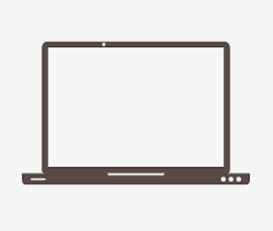
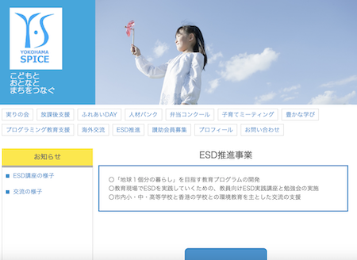
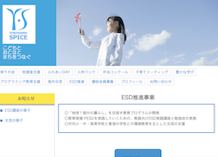

progress

-
STEP1
2月上旬N法人から依頼を受けました。 -
STEP2
2月中旬データを受け取り、デザイン案を元にコーディングを開始 -
STEP3
2月下旬完成したページを提出、修正指示を待ちます。 -
STEP4
3月上旬修正依頼をいただき、細かい箇所を直して再提出。このタイミングで追加ページの依頼をいただきました。 -
STEP4
現在追加データ待ちです。
commitment


○配色
○制作人数
| #0088ce | #ffd900 | #cccccc |
1人
○心がけたこと1人で実際の案件をお受けするということで初めは不安もありましたが、実際の案件に関わることでスキルアップに繋がると考えて参加を決めました。制作期限は1ヶ月というお話でしたが、修正や疑問点が出ることを見越して計画を立てることで効率よく作業を進められ期限よりも1週間以上余裕を持って提出することができました。そのことを評価していただだき、追加のページ制作も依頼していただきました。
technology
html5
コーディングを始める前にワークフレームを作ることを意識しています。
css
余白の調整など細かいところまで確認を行いました。